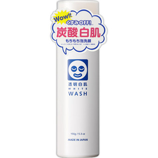

返回列表
产品名称：透明白肌 ホワイトウォッシュ N

石澤研究所 透明白肌 ホワイトウォッシュ N １５０ｇ
メーカー 石澤研究所
JANコード 4992440034430
商品の特徴
もちもち泡洗顔
- 成分・分量
- 水、グリセリン、ラウリン酸ポリグリセリル-10、LPG、ココイルグルタミン酸TEA、ジグリセリン、ラウリルリン酸Na、ラウロイルメチルアラニンTEA、ヒアルロン酸Na、加水分解コラーゲン、豆乳発酵液、クズ根エキス、クロレラエキス、アロエベラ葉エキス、ユキノシタエキス、ボタンエキス、クエン酸、クエン酸Na、二酸化炭素、キサンタンガム、BG、メチルパラベン、(ラウリル/ミリスチル)グリコールヒドロキシプロピルエーテル
- 用法及び用量
- 顔を濡らしてから手の平いっぱいに泡をとります。お顔全体に広げ、やさしく泡でマッサージするように洗顔します。すすぎ残しのないよう十分に洗い流して下さい。